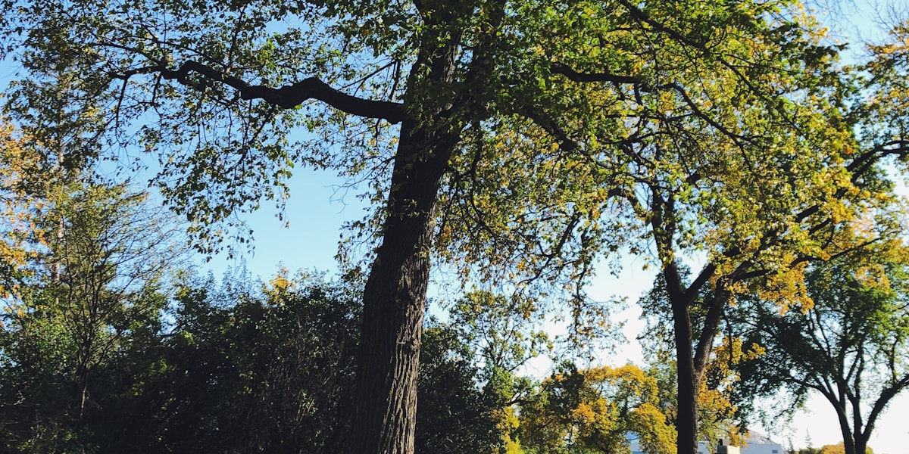

Cheap Things to Do in Winnipeg: A 24-Hour Budget Plan for Any Season

A cheap day in Winnipeg costs very little beyond what you eat. Transit is $3.10 a ride on a peggo card or $11.45 for a 24-hour pass, the Legislative Building tour is free, the Leo Mol Sculpture Garden and The Forks cost nothing to walk, and the big museums each have a free day or evening. The trick is choosing the right day of the week, because the free slots do not line up. This plan is built for a Friday in late fall or winter, when daylight is short and the river trail is not yet open, with notes on how to swap it for other days and for summer.
What the fixed costs come to
- Transit: three rides on peggo e-cash, $9.30 (a 24-hour e-pass is $11.45 and only pays off at four rides or more; cash is $3.45 a ride)
- Leo Mol Sculpture Garden, The Forks, Exchange District: free
- Manitoba Legislative Building tour: free, reserve ahead
- Manitoba Museum: free on the first Friday of the month, 4 to 9 p.m. (adult admission is otherwise $25)
- Food: one coffee and one meal out, everything else packed from the kitchen where you are staying
Leave out the food and the day costs under $10. How far under $40 the whole thing lands depends on where you eat.
Which free admission falls on which day
If you only have one day, check this list first and build around it.
- Monday: Legislative Building tour at 2 p.m. (from September to December, with an extra 7 p.m. tour every second Monday). The Canadian Museum for Human Rights is closed on Mondays.
- Wednesday: free admission at WAG-Qaumajuq from 5 to 9 p.m., with talks, music or tours on most nights. The program is booked to run until 2029.
- Friday: Legislative Building tours at 11 a.m. and 2 p.m. On the first Friday of the month, the Manitoba Museum (galleries, Planetarium and Science Gallery) is free from 4 to 9 p.m., no ticket needed.
- First Sunday of the month: the Canadian Museum for Human Rights is free from 10 a.m. to 5 p.m. It is also free on December 10, Human Rights Day. Otherwise adult admission is $23.
- Second Sunday of the month: WAG-Qaumajuq is free all day (it opens 11 a.m. to 5 p.m., Wednesday to Sunday).
For the full list of places that never charge, see our guide to free things to do in Winnipeg.
The day, hour by hour
In mid-November the sun rises around 7:40 a.m. and sets around 4:45 p.m., so the outdoor stops come first and the afternoon moves indoors.
8:30 a.m. Peanut Park and a coffee on Corydon
Start in Crescentwood at Peanut Park (officially Enderton Park), the two-acre green bounded by Ruskin Row, Yale Avenue, Avonhurst Street and Harvard Avenue. Charles Enderton set the land aside for the city in 1902, and the oval path still follows that plan. Ten minutes is enough in November.
Corydon Avenue is about a 10-minute walk south. Thom Bargen's café at 743 Corydon roasts its own beans; if your group wants eggs as well as coffee, Stella's has a café at 1100 Corydon. The cheapest version of this hour is coffee made at home and drunk on a park bench, which in November means a thermos.
9:45 a.m. Bus D19 to Assiniboine Park
The D19 Corydon runs along Corydon Avenue between downtown and Assiniboine Park, so you can board on the avenue and ride west to the park. Tap your peggo card once here.
Walk to the Leo Mol Sculpture Garden, which is open from 9 a.m. to dusk all year and free. The bronzes stand outdoors among the paths and the pond, and they look good under snow. The Leo Mol Gallery and the old school-house studio inside the garden are closed in winter. In summer, add the English Garden next to it.
11:15 a.m. Back on the D19, then lunch at The Forks
Ride the D19 east to its downtown terminal on Kennedy Street (second tap) and walk south-east to The Forks. The Forks Market food hall opens at 11 a.m. and has around two dozen counters, from Fergie's Fish 'n Chips to Taste of Sri Lanka and Wienerpeg; The Common is the hall's beer and wine bar. This is the meal to buy if you buy only one. Afterwards, coffee costs less than a museum: Fools & Horses has a counter in the market, and Harrisons pours in the Johnston Terminal next door until 9 p.m.
Walking around The Forks is free: the market and Johnston Terminal, the riverbank, and the outside of the Canadian Museum for Human Rights. Do not plan on skating in November. The Nestaweya River Trail opens only when the ice is thick enough, which has meant anywhere from late December to late January (it opened on January 1 in 2026 and on January 25 in 2024).
2:00 p.m. Free tour of the Manitoba Legislative Building
The Legislative Building at 450 Broadway is a walk west from The Forks along Broadway. From September to December the free public tours run Fridays at 11 a.m. and 2 p.m. and Mondays at 2 p.m. Each lasts about an hour and is capped at 30 people, so reserve a free ticket online or by calling 204-945-5813. Anyone 18 or older needs government photo ID, and you should arrive 10 minutes early for screening at the north entrance facing Broadway. Guides walk you through the building's carved and numbered symbolism, from the bison on the grand staircase to the Golden Boy on the dome. From July to early September the tours run on the hour instead.
3:30 p.m. The Exchange District before dark
Head north to the Exchange District, a National Historic Site of early-1900s warehouses and banks, and walk it while there is still light for the façades: Old Market Square, Bannatyne and McDermot Avenues, and Main Street. Note that Parlour Coffee at 468 Main closes at 3 p.m. on weekdays. If you need a warm stop, Little Sister's café at 171 McDermot Avenue is open until 8 p.m. on weekdays.
4:00 to 9:00 p.m. A free museum evening
On the first Friday of the month, the Manitoba Museum at 190 Rupert Avenue, on the edge of the Exchange, is free from 4 to 9 p.m. for all three of its attractions. That turns the coldest, darkest part of the day into the most valuable one: you would otherwise pay $25 an adult. On a Wednesday, do the same thing at WAG-Qaumajuq, free from 5 to 9 p.m.
On a Friday that is not the first of the month, the evening is dinner and a walk. The King's Head Pub at 120 King Street, in the Exchange since 1987, has a long beer list and often has live music.
9:30 p.m. Back to Crescentwood
Take the D19 from Kennedy Street back to Corydon Avenue for your third ride. If you would rather end with dessert, Baked Expectations at 161 Osborne Street, known for its tall cakes, is open into the late evening most nights.
Swapping the plan for another day or season
On a Monday, move the Legislative tour to 2 p.m. and skip the Human Rights Museum, which is closed. On the first Sunday, put the Canadian Museum for Human Rights at the centre of the afternoon and drop the tour, since there is none. On the second Sunday, spend the afternoon at WAG-Qaumajuq.
In summer, the timings loosen. The Legislative tours run hourly from July 1 to early September, the English Garden and the riverwalk are at their best, and evenings stay light long enough to walk home through Crescentwood after dinner. In deep winter, from January, add the river trail at The Forks, which is free to skate or walk once it opens, and keep the outdoor stretches short: downtown's indoor Walkway connects many of the buildings around Portage and Main.
Before you go: free days, tour times and admission prices change through the year. Check humanrights.ca, wag.ca, manitobamuseum.ca and the Legislative Assembly's tour page the week you visit, and winnipegtransit.com for the D19 timetable.
Where we stay
Our three-bedroom house on Ruskin Row is a short walk from Peanut Park and about 10 minutes on foot from Corydon Avenue, where the D19 runs. A full kitchen is what makes a cheap day cheap: breakfast and a packed snack cost far less than a second meal out. For more ways to get around without a car, see our guide to getting around Winnipeg, and for coffee across the city, our Winnipeg coffee guide. Book on Airbnb.